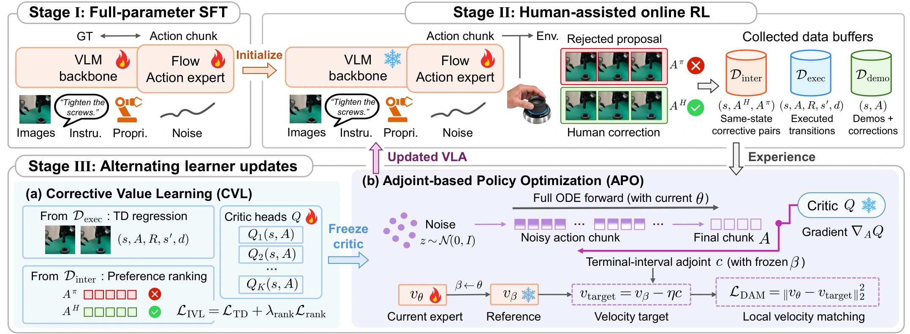
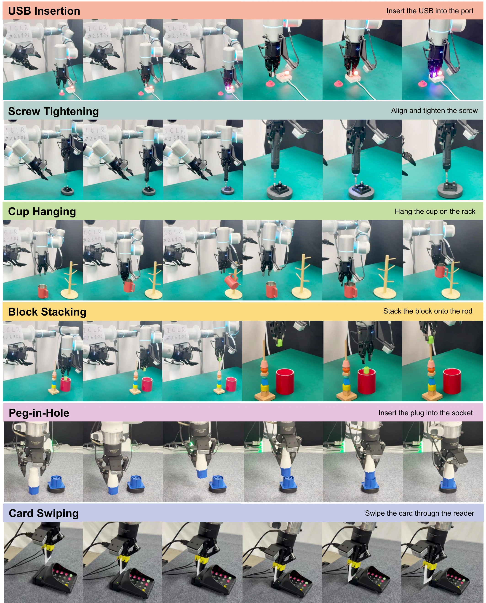
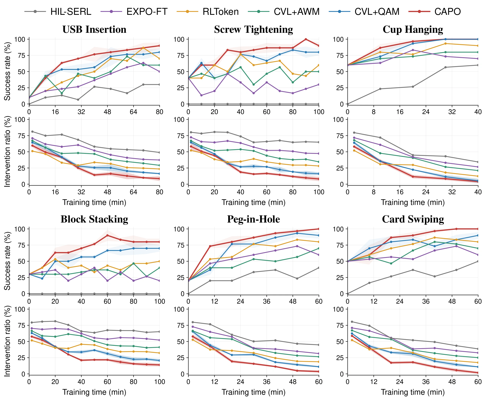

CAPO starts from a task-adapted VLA and alternates human-assisted interaction with two learning stages. Corrective Value Learning (CVL) combines temporal-difference learning on executed transitions with preference ranking between human corrections and rejected policy proposals. Adjoint-based Policy Optimization (APO) propagates the learned action-value gradients along native flow trajectories to construct local velocity targets, while preserving the original deployment sampler.
CAPO
Real-World Reinforcement Learning for VLA
via Corrective Adjoint Policy Optimization
Abstract
Human-in-the-Loop Reinforcement Learning (HiL-RL) offers a practical route for adapting Vision-Language-Action (VLA) models through real-world interaction guided by human interventions. Yet effectively leveraging these interventions remains challenging, their corrective signals must first support informative value learning and then be translated into effective updates of the VLA’s multi-step flow policy. To address these challenges, we propose Corrective Adjoint Policy Optimization (CAPO), a real-world RL framework that couples Corrective Value Learning (CVL) with Adjoint-based Policy Optimization (APO). Specifically, CVL exploits human corrections both to learn action values from their observed outcomes and to provide comparative supervision against rejected policy proposals. Guided by the learned critic, APO propagates action-value gradients along the VLA’s native flow trajectories and converts them into local policy updates, while preserving the original deployment sampler. Across six real-world manipulation tasks, CAPO achieves the highest mean autonomous success of 93.3% and the lowest intervention rate among the evaluated methods.
Real-world demonstrations
CAPO learns precise, contact-rich manipulation through real-world interaction and human corrections.
Method

Corrective Value Learning (CVL)
- Learn from executed outcomes. Temporal-difference learning grounds action values in the observed outcomes of executed actions.
- Learn from corrective preferences. Ranking human corrections above the proposals they replace provides complementary value supervision for policy improvement.
Adjoint-based Policy Optimization (APO)
- Translate value guidance into policy updates. APO carries action-value gradients backward along native flow trajectories to construct local velocity targets.
- Stabilize and focus refinement. A phase-wise reference stabilizes updates, while terminal-interval matching focuses refinement on later generation steps.
- Preserve native deployment. The updated VLA retains its original sampler, without an auxiliary actor or inference-time critic guidance.
Experiments
Tasks
We evaluate CAPO on six real-world manipulation tasks: USB Insertion, Screw Tightening, Cup Hanging, Block Stacking, Peg-in-Hole, and Card Swiping. These tasks require precise alignment and contact-rich control, using 30–50 demonstrations and 40–100 minutes of active collection per task.

Results
CAPO achieves 93.3% mean autonomous success across the six tasks and the lowest intervention ratio among the evaluated methods. Mean final success exceeds CVL+QAM by 8.3 percentage points and RLToken by 21.7 percentage points. The results below compare autonomous success and human intervention across CAPO, HIL-SERL, EXPO-FT, RLToken, CVL+AWM, and CVL+QAM.

Citation
@article{zhong2026capo,
title={CAPO: Real-World Reinforcement Learning for VLA via Corrective Adjoint Policy Optimization},
author={Zhong, Guojin and Zhang, Weiyao and Lin, Xingyao and Lu, Tianyi and Xu, Shengqi and Ye, Ziyi and Wu, Zuxuan and Jiang, Yu-Gang},
journal={arXiv preprint arXiv:},
year={2026}
}